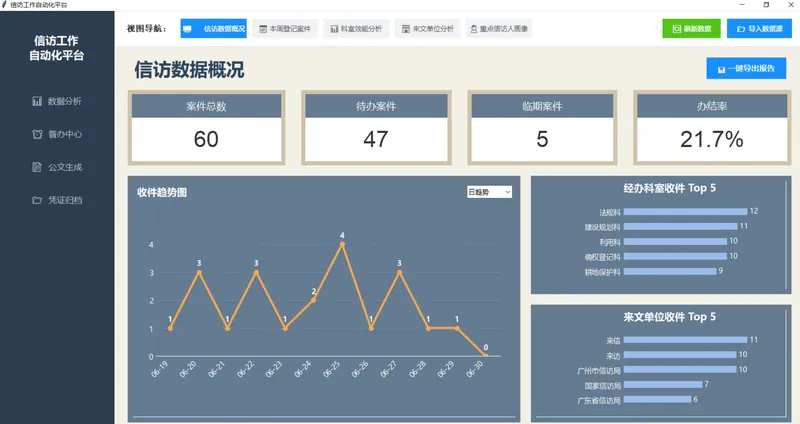
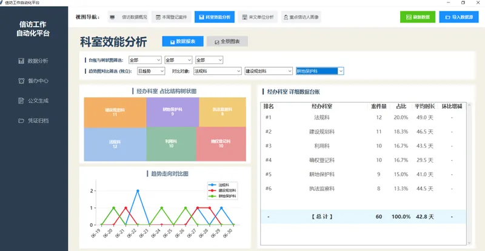
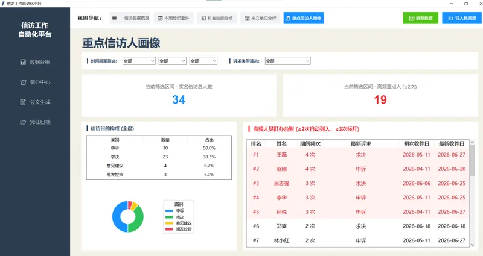
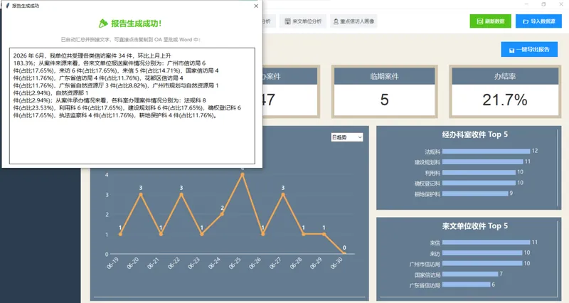
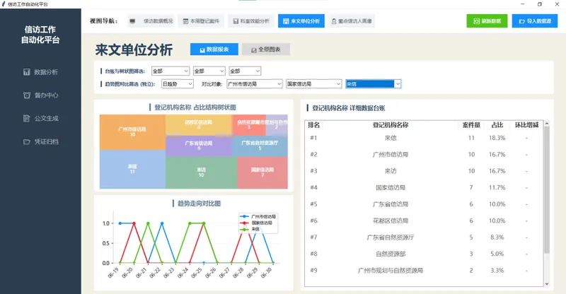

FEATURE 01
数据概况 — 一屏掌控全局
页面顶部 4 张 KPI 卡片（案件总数/待办数量/临期数量/办结率）实时刷新。左侧折线图展示收件趋势，支持日/月粒度一键切换——点击"近12天"看微观波动，点击"近12月"看宏观走势。右侧双条形图分别展示经办科室 Top 5和来文单位 Top 5，一眼识别哪个科室压力最大、哪个街道来件最多。
FEATURE 02
科室效能分析 — 多维下钻 + 环比对标
Squarify 树状图直观展示各科室案件占比结构——面积越大案件越多。趋势折线图支持3 条曲线独立对比，可自由选择科室进行横向对标。台账含排名、案件量、占比、平均办案时长、环比增减等维度，年/季/月独立筛选。全景图表页支持 300dpi 高清导出，可直接用于 PPT 汇报。


FEATURE 03
重点信访人画像 — 高风险人员自动识别
系统自动筛选信访次数 ≥2 次的重复信访人，≥3 次标红高亮预警。左侧环形图展示信访目的构成（申诉/求决/意见建议/揭发控告），右侧台账记录申诉频次、最新诉求、初次与最近收件日期。支持年/季/月 + 诉求类型组合筛选，帮助快速锁定需要重点关注的案件。
FEATURE 04
一键导出报告 — 10 分钟 → 30 秒
选择统计年份、报表类型（月报/季报）、统计周期后，系统自动计算各来源单位与科室的案件量、占比、环比增减，拼接为格式化中文文段。无需手工统计、无需复制粘贴到 Word——文段生成后一键复制到 OA 呈批或月度报告中。将原来手工统计+撰写的 10 分钟压缩到 30 秒。


FEATURE 05
来文单位 + 科室效能 — 全景图表
除了数据报表视图，每个分析维度都配有全景条形图模式——横向条形图按案件量降序排列，标签清晰标注在条形末端。300dpi 高清导出按钮一键保存为 PNG，直接用于周报、月报和其他汇报场景。